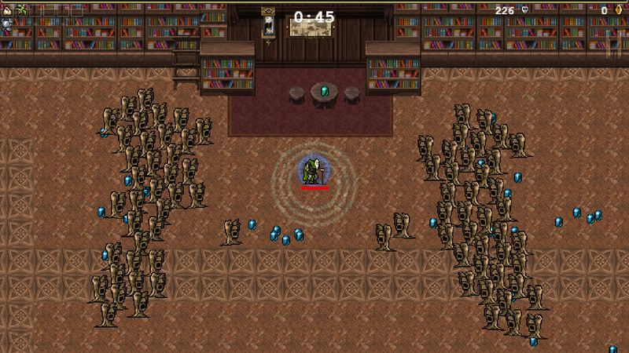
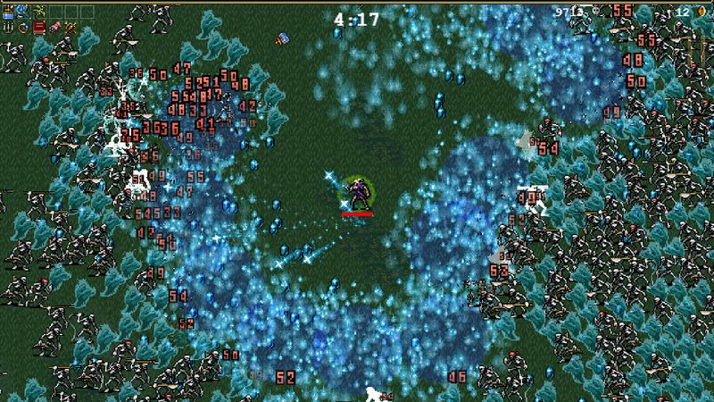

The thirty-second version
Five euros. Ninety hours. Terms and conditions apply.
It's a screensaver that hands out achievements. Best five euros I ever spent by accident.
Vampire Survivors is the best five euros a dad can spend. You don't aim and you don't attack; the game handles both. You just walk, dodge, and pick upgrades, and every run is thirty minutes to sunrise. What starts as a curiosity ends as a full brain-off wind-down machine that will still lead to shouting when your Bloody Tear evolves. Do not download it before a work night.
Okay, what is this thing?
You are a small pixel person on a large brown field. Bats show up. Then more bats. Then bats with skeletons in them. At no point do you aim; your weapons swing automatically, and your only job is to walk in circles picking up gems while trying not to die. Thirty minutes in, the entire screen is a lightshow, the sound is a horror, and the numbers going up are the numbers going up.
The design trick is that every weapon has an evolved form that requires a specific passive item at max level, and the fun is discovering those combinations. You'll go from confused to godlike in the space of a fifteen-minute run. And then you'll play the same map with a different character. And then you'll unlock the next stage. And then it's midnight.


Why it escaped the group chat
- An auto-attack survivor game where you only control movement and level-up choices.
- Runs are capped at thirty minutes, ending in a genuine boss-rush sunrise.
- Every weapon has an evolution unlocked by pairing it with a specific passive item.
Three dads enter
01
Dad Who Skipped the Tutorial
I put it on for ten minutes and it took my weekend.
I'm the guy who plays four games a year. I've got 140 hours on Vampire Survivors. I don't know how. I call it 'the runaround game' and I put it on the second I sit down. There's no menu depth for me to complain about because I don't open menus. My only critique is that my screen gets 'quite busy' near the end, which I'm told is the entire point.
02
The Descent Guy
I'm fine with that, and I've got a build spreadsheet.
I sniffed at it for a week and then wrote a fourteen-tab spreadsheet on weapon evolutions. I have an opinion on Peachone versus Ebony Wings. I'm running arcanas I'd very much like you to hear about. My serious critique is that the meta-progression can trivialise runs after a while. I am still playing runs after a while.
03
Normal-ish Dad
Perfect for a tired hour and terrible for a healthy sleep schedule.
It's the only game I'll play in bed. Thirty-minute runs, no live pressure, no session anxiety, and a satisfying number-go-up loop that resets nightly. I wish it were harder to say 'one more run' at 11pm, but that's an us problem, not a game problem. For the price of a coffee it's an obscene amount of game.
Who it is for and what to watch
Invite these people
- People whose gaming windows are exactly thirty minutes long
- Anyone who wants number-go-up without any twitch reflexes
- Broke dads. Legitimately, five euros
Dad caveats
- You will genuinely lose sleep to it, and the game will not apologise
- The screen gets loud and busy. Photosensitivity warning, seriously
- There is no story here and none pretending. You're on the wrong shelf if you want one
Receipts
Between the three of us we have somewhere in the region of two hundred hours on PC across roughly a year. We are not proud. We are not stopping.